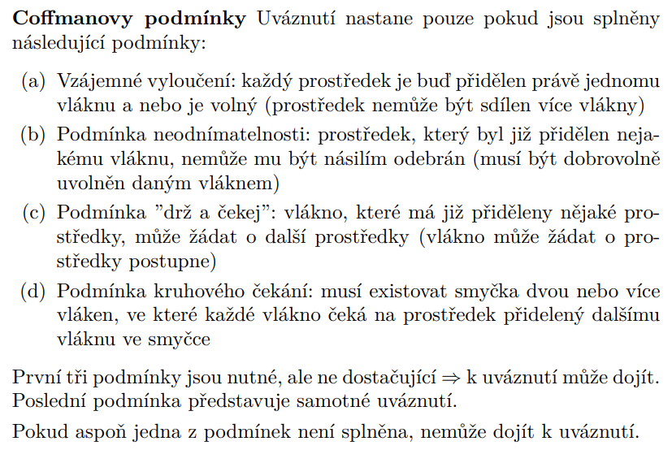

Nevim jestli jsou vsechny tyhle vzorce spravne, je mozny ze ne. Takhle jsme to nejak ale vymysleli. Za spravnost nerucim
RAID 0 JBOD
- Kapacita = \( \#disk \cdot |disk| \)
- Reading Speed = \( \min(speed, {} controller, {} Ethernet/Fiber) \)
- Writing Speed = \( \min(speed, {} controller, {} Ethernet/Fiber) \)
- Kolik disků může vypadnout = \( 0 \)
- No Failure Probability = \( R(t)^{\#disk} = (e^{-\frac{t}{\text{MTBF}}})^{\#disk}, {} t = \#month \cdot 24 \cdot \frac{365}{12} \)
- Čas obnovy = \( \text{nelze} \)
RAID 0 Stripe
- Kapacita = \( \#disk \cdot |disk| \)
- Reading Speed = \( \min(\#disk \cdot speed, {} controller, {} Ethernet/Fiber) \)
- Writing Speed = \( \min(\#disk \cdot speed, {} controller, {} Ethernet/Fiber) \)
- Kolik disků může vypadnout = \( 0 \)
- No Failure Probability = \( R(t)^{\#disk} \)
- Čas obnovy = \( \text{nelze} \)
RAID 1
- Kapacita = \( \frac{\#disk}{2} \cdot |disk| \)
- Reading Speed = \( \min(2 \cdot speed, {} controller, {} Ethernet/Fiber) \)
- Writing Speed = \( \min(speed, {} \frac{controller}{2}, {} Ethernet/Fiber) \)
- Kolik disků může vypadnout = \( 1 \)
- No Failure Probability = \( (1-(1-R(t))^2)^{\#disk/2} \)
- Čas obnovy = \( \frac{|disk| \text{ (v MiB)}}{\min(speed - user, \frac{controller - user}{2})} \), mozna spatne, je dulezite zjistit co je bottleneck
RAID 01
- Kapacita = \( \frac{\#disk}{2} \cdot |disk| \)
- Reading Speed = \( \min(\#disk \cdot speed, {} controller, {} Ethernet/Fiber) \)
- Writing Speed = \( \min(\frac{\#disk}{2} \cdot speed, {} \frac{controller}{2}, {} Ethernet/Fiber) \)
- Kolik disků může vypadnout = \( 1 \)
- No Failure Probability = \( 1 - (1 - R(t)^{\#disk/2})^2 \), narazil jsem na par prikladu na FW kde tenhle vzorec neplatil, v jinych zase platil xd
- Čas obnovy = \( \frac{\#disk \cdot |disk| \text{ (v MiB)}}{controller - user} \), pouze kdyz je controller bottleneck
RAID 10
- Kapacita = \( \frac{\#disk}{2} \cdot |disk| \)
- Reading Speed = \( \min(\#disk \cdot speed, {} controller, {} Ethernet/Fiber) \)
- Writing Speed = \( \min(\frac{\#disk}{2} \cdot speed, {} \frac{controller}{2}, {} Ethernet/Fiber) \)
- Kolik disků může vypadnout = \( 1 \)
- No Failure Probability = \( (1-(1-R(t))^2)^{\#disk/2} \)
- Čas obnovy = \( \frac{|disk| \text{ (v MiB)}}{\min(\frac{controller - user}{2}, \frac{speed - user}{\#disk/2})} \), mozna spatne idk
RAID 5
- Kapacita = \( (\#disk - 1) \cdot |disk| \)
- Reading Speed = \( \min((\#disk - 1) \cdot speed, controller, Ethernet/Fiber) \)
- Writing Speed = \( \min((\#disk - 1) \cdot speed, \frac{\#disk-1}{\#disk} \cdot controller, Ethernet/Fiber) \)
- Kolik disků může vypadnout = \( 1 \)
- No Failure Probability = \( R(t)^n + n \cdot R(t)^{n-1} \cdot (1-R(t)), {} n = \#disk \)
- Čas obnovy = \( \frac{\#disk \cdot |disk| \text{ (v MiB)}}{controller - user} \), pouze kdyz je controller bottleneck
RAID 6
- Kapacita = \( (\#disk -2) \cdot |disk| \)
- Reading Speed = \( \min((\#disk - 2) \cdot speed, controller, Ethernet/Fiber) \)
- Writing Speed = \( \min((\#disk - 2) \cdot speed, \frac{\#disk-2}{\#disk} \cdot controller, Ethernet/Fiber) \)
- Kolik disků může vypadnout = \( 2 \)
- No Failure Probability = \( R(t)^n + \binom{n}{1} \cdot R(t)^{n-1} \cdot (1-R(t)) + \binom{n}{2} \cdot R(t)^{n-2}\cdot(1-R(t))^2 \)
- Čas obnovy = \( \frac{(\#disk-1) \cdot |disk| \text{ (v MiB)}}{controller - user} \), pouze kdyz je controller bottleneck
Systém používá virtuální paměť se stránkováním. Velikost stránky/rámce je \(2^x\) B, velikost logické adresy je \(y\) bitů, velikost fyzické adresy je \(z\) bitů. Systém používá TLB o velikosti \(a\) položek (řádek). Na systému právě běží \(b\) uživatelských procesů...
- Logická adresa se skládá z čísla \(\text{stránky}\) o velikosti \( y - x \), offset je \(x\)
- Fyzická adresa se skládá z čísla \(\text{rámce}\) o velikosti \( z - x \), offset je \(x\)
- pro 3. otázku vždy platí tyto odpovědi:
- Pro různě velké stránky je velikost offsetu různá
- Pro různě velké rámce je velikost offsetu různá
- Offset definuje pozici dat uvnitř rámce
- Offset definuje pozici dat uvnitř stránky
- Při překladu adresy hledáme v tabulce řádku, ve které je záznam o dané stránce
- Při překladu adresy hledáme číslo rámce, do kterého se stránka nahrála
- Při překladu adresy se číslo stránky používá jako index do klasické tabulky stránek
- Při překladu adresy lze použít rozptylovací funkci k urychlení překladu (platí pouze v případě, pokud zadání říká, že používáme invertovanou tabulku stránek)
- pro 4. otázku vždy platí tyto odpovědi:
- Pokud zadání říká, že používáme klasickou tabulku stránek, tak platí jen tyto možnosti:
- Jádro systému si musí pamatovat alespoň \(b\) tabulek stránek
- Jádro systému si musí pamatovat pro každý proces právě jednu tabulku
- Pokud zadání říká, že používáme invertovanou tabulku stránek, tak platí jen tato možnost:
- Jádro systému si musí pamatovat jenom jednu tabulku stránek
- 5. a 6. otázka
Na řádce klasické tabulky stránek je uloženo (ČR R M P)
- Číslo rámce
- Reference bit
- Modify bit
- Present bit
Na řádce invertované tabulky stránek je uloženo (ČS ČP R M P)
- Číslo stránky
- Číslo procesu
- Reference bit
- Modify bit
- Present bit
Na řádce TLB je uloženo (ČR ČS R M)
- Číslo rámce
- Číslo stránky
- Reference bit
- Modify bit
- pro 7. otazku plati pouze:
- Současné serverové a desktopové procesory umožňují používat různě velké stránky pro různé procesy
- Cache hit ratio TLB se může zvýšit, pokud systém bude používat pro proces větší stránky
- 8. otazka
- V případě \( \text{klasické tabulky} \): Tabulka stránek bude obsahovat \(2^{y-x}\)
- V případě \( \text{invertované tabulky} \): Tabulka stránek bude obsahovat \(2^{z-x}\)
\[
\begin{array}{c}
\begin{array}{c@{}c@{}c}
\begin{array}{c@{}c@{}c}
& \text{Požadované} \\
& \begin{array}{cccc} T_0 & T_1 & T_2 & T_3 \end{array} & \\
\begin{array}{c} P_0 \\ P_1 \\ P_2 \\ P_3 \\ P_4 \end{array} &
\left[
\begin{array}{cccc}
5 & 5 & 4 & 4 \\
1 & 1 & 1 & 1 \\
4 & 4 & 6 & 4 \\
3 & 3 & 8 & 4 \\
1 & 0 & 0 & 1
\end{array}
\right]
\end{array} &
-\hspace{1cm}
\begin{array}{c@{}c@{}c}
& \text{Přidělené} \\
& \begin{array}{cccc} T_0 & T_1 & T_2 & T_3 \end{array} & \\
\begin{array}{c} P_0 \\ P_1 \\ P_2 \\ P_3 \\ P_4 \end{array} &
\left[
\begin{array}{cccc}
1 & 0 & 2 & 2 \\
1 & 0 & 0 & 1 \\
3 & 3 & 0 & 1 \\
0 & 2 & 2 & 2 \\
1 & 0 & 0 & 1
\end{array}
\right]
\end{array} &
=\hspace{1cm}
\begin{array}{c@{}c@{}c}
& \text{Potřebné} \\
& \begin{array}{cccc} T_0 & T_1 & T_2 & T_3 \end{array} & \\
\begin{array}{c} P_0 \\ P_1 \\ P_2 \\ P_3 \\ P_4 \end{array} &
\left[
\begin{array}{cccc}
4 & 5 & 2 & 2 \\
0 & 1 & 1 & 0 \\
1 & 1 & 6 & 3 \\
3 & 1 & 6 & 2 \\
0 & 0 & 0 & 0
\end{array}
\right]
\end{array}
\end{array}
\end{array}
\]
\[
\begin{array}{}
&\text{Počet prostředků}\\ &
\begin{bmatrix}{}
1 & 1 & 5 & 2
\end{bmatrix}
\end{array}
\]
P4 je již uspokojený, nyní lze uspokojit P1, tzn. přidělíme T1,T2 na uspokojení P1, ty se nám vrátí a dostaneme
1xT0 a 1xT3, tzn. teď máme:
\[
\begin{array}{}
&\text{Počet prostředků}\\ &
\begin{bmatrix}{}
2 & 1 & 5 & 3
\end{bmatrix}
\end{array}
\]
\[
\begin{array}{c@{}c@{}c}
& \text{Potřebné} \\
& \begin{array}{cccc} T_0 & T_1 & T_2 & T_3 \end{array} & \\
\begin{array}{c} P_0 \\ P_1 \\ P_2 \\ P_3 \\ P_4 \end{array} &
\left[
\begin{array}{cccc}
4 & 5 & 2 & 2 \\
0 & 0 & 0 & 0 \\
1 & 1 & 6 & 3 \\
3 & 1 & 6 & 2 \\
0 & 0 & 0 & 0
\end{array}
\right]
\end{array}
\]
nyní vidíme, že již nemáme prostředky na uspokojení žádného dalšího procesu, tzn. nastává \(\text{DEADLOCK}\)

p = fork();
if (0 == p)
// We're the child process
else if (p > 0)
// We're the parent process
else
// We're the parent process, but child couldn't be created
if (fork() && fork() && fork())
printf("hello world\n");
-----
hello world
if (fork() || fork() || fork())
printf("hello world\n");
-----
hello world
hello world
hello world
for( int i = 0; i < X; i++ )
if( fork() == fork() )
break;
\( \text{Kolik procesu vznikne?} \)
\( 3^0+3^1+3^2+...+3^{\color{red}{x}} = \displaystyle\sum_{i=0}^{\color{red}x} 3^i\)
char a[4797902]; <-- zasobnik (stack) tzn 4797902B ≈ 5MiB
char *ptr_char = (char *) malloc (3700521); <-- hlada (heap) tzn 3700521B ≈ 4MiB
execve/execlp - ukončí běžící program (proces se neukončí) a začne jiný program, po dokončení nového programu se nevrátí zpět, ale ukončí se
sleep - program je uspán na určitou dobu, poté pokračuje
Máme k dispozici pevný disk s následujícími parametry:
- Kapacita: \(1 \text{ TiB}\)
- Velikost sektoru: \(4096 \text{ B}\)
- Počet hlav: \(2\)
- Počet cylindrů: \(32768\)
- Průměrný počet sektorů na cylindr: \(8192\)
- Rychlost: \(10000 \text{ RPM}\)
- Průměrná doba vystavení hlaviček: \(9 \text{ ms}\)
- Doba vystavení hlaviček na sousední cylindr: \(3 \text{ ms}\)
Mozne otazky:
-
Jak dlouho bude trvat přečíst soubor o velikosti \(7819264 \text{ B}\) z disku, pokud je jeho obsah uložen na jednotlivých sektorech náhodně umístěných po disku?
Potřebné informace:
- Velikost sektoru: \(4096 \text{ B}\)
- Průměrný počet sektorů na cylindr: \(8192\)
- Rychlost: \(10000 \text{ RPM}\)
- Průměrná doba vystavení hlaviček: \(9 \text{ ms}\)
- Velikost souboru \(7819264 \text{ B}\)
Zadefinujeme si několik proměnných:
-
\( A \) = počet sektorů, na kterých se nachází soubor = \( \frac{\text{velikost souboru v bytech}}{\text{velikost sektoru v bytech}} = \frac{7819264}{4096} = \color{palevioletred}{1909} \)
-
\( B \) = počet milisekund, za který proběhne jedna otáčka = \( \frac{\text{60s}}{\text{RMP}} = \frac{60}{10000} = 0.006 = \color{palevioletred}{6 \text{ ms}} \)
-
\( C \) = průmerný počet milisekund, za který se hlava otočí na správný sektor = \( \frac{B}{2} = \color{palevioletred}{3 \text{ ms}} \)
-
\( D \) = průmerný počet milisekund, za který se přečte jeden sektor = \( \frac{B}{\text{průměrný počet sektorů na cylindr}} = \color{palevioletred}{\frac{6}{8192}} \)
Odpověď: \( A \times (\text{průměrná doba vystavení hlaviček v ms} + C + D)\)
-
Jak dlouho (v milisekundách) bude trvat přečíst soubor o velikosti \(7819264 \text{ B}\) z disku, pokud je jeho obsah uložen na sousedních cylindrech?
Potřebné informace:
- Velikost sektoru: \(4096 \text{ B}\)
- Průměrný počet sektorů na cylindr: \(8192\)
- Rychlost: \(10000 \text{ RPM}\)
- Průměrná doba vystavení hlaviček: \(9 \text{ ms}\)
- Doba vystavení hlaviček na sousední cylindr: \( \color{palevioletred}{3 \text{ ms}} \)
- Velikost souboru \(7819264 \text{ B}\)
Zadefinujeme si několik proměnných:
-
\( A \) = počet sektorů, na kterých se nachází soubor = \( \frac{\text{velikost souboru v bytech}}{\text{velikost sektoru v bytech}} = \frac{7819264}{4096} = \color{palevioletred}{1909} \)
-
\( B \) = počet milisekund, za který proběhne jedna otáčka = \( \frac{\text{60s}}{\text{RMP}} = \frac{60}{10000} = 0.006 = \color{palevioletred}{6 \text{ ms}} \)
-
\( C \) = průmerný počet milisekund, za který se hlava otočí na správný sektor = \( \frac{B}{2} = \color{palevioletred}{3 \text{ ms}} \)
-
\( D \) = průmerný počet milisekund, za který se přečte jeden sektor = \( \frac{B}{\text{průměrný počet sektorů na cylindr}} = \color{palevioletred}{\frac{6}{8192}} \)
-
\( E \) = počet cylindrů, na kterých se nachází soubor = \( \frac{A}{\text{průměrný počet sektorů na cylindr}} = \color{palevioletred}{\frac{1909}{8192}} \)
- \( E_h = \color{palevioletred}{\lceil{E}\rceil} \), \( E_d = \color{palevioletred}{\lfloor{E}\rfloor} \)
-
\(
F = \begin{cases}
\color{palevioletred}{E - 1}, & \text{pokud } E \in \mathbb{N} \\
\color{palevioletred}{E_d}, & \text{jinak}
\end{cases}
\)
Odpověď: \( (E \times B) + \text{průměrná doba vystavení hlaviček v ms} + (F \times \text{doba vystavení hlaviček na sousední cylindr v ms}) + (E_h \times C)\)